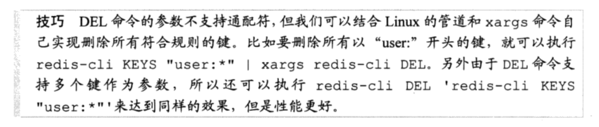

redis的数据类型和基本命令
redis
Table of Contents
- redis命令是原子操作，不会出现竟态。只能是字符串。不支持数据类型嵌套。
- redis数据类型：string，list，set，zset（有序集合），hash（散列）。用 type key 可以获取键值的数据类型。
- Redis的列表类型可以用来实现队列，并且支持阻塞式读取，可以很容易的实现一个高性能的优先级队列。同时在更高层面上，redis还支持发布/订阅的消息模式，可以基于此构建聊天室等系统。
- redis批量删除
 - 判断键是否存在：exists key
数据类型
- 字符串类型：Redis中最基本的数据类型，它能存储任何格式的字符串，包括二进制数据。可以存邮箱、json化的对象甚至是一张图片。一个字符串最大容量512MB。
- 基本用法：SET key value，GET key
- 递增数字：当存储的字符串是整数时，用INCR，让当前键值递增，返回递增后的值:INCR num ,返回1；INCR num，返回2.不是整数会报错。
- 增加指定的整数：INCRBY key increment，与INCR不同的是，可以通过increment指定增加的数值。INCRBY bar 2，返回2；INCRBY bar 3，返回5.
- 减少指定的整数：DECR key；DECRBY key decrement。
- 增加指定浮点数：INCRBYFLOAT key increment. INCRBYFLOAT bar 2.7;INCRBYFLOAT bar 5E+4. increment可为负数.
- 向尾部追加值：APPEND key value.不存在则设为value。返回值是追加后字符串总长度。SET key hello;APPEND key ‘ world!’.
- 获取字符串长度：STRLEN key.键不存在返回0.
- 同时设置/获取多个键值：MSET key value [key value…];MGET key [key…]
- 位操作
- 散列类型（hash）
- 基本用法：HSET key field value;HGET key field;HMSET key field value [field value…];HMGET key field [field…];HGETALL key
- 判断字段是否存在:HEXISTS key field
- 当字段不存在时赋值：HSETNX key field value.与HSET的区别是如果字段已存在，HSETNX命令将不执行任何操作。
- 增加数字：HINCRBY key field increment:hash类型没有HINCR命令，可以通过HINCRBY key field 1来实现。
- 删除字段：HDEL key field [field…]
- 只获取字段名或字段值：HKEYS key;HKEYS key
- 获取字段数量：HLEN key
- 列表类型(list):有序、不唯一。内部是使用双向链表实现的，所以向列表两端添加元素的时间复杂度为O(1)，获取越接近两端的元素速度就越快。借助列表类型，Redis还可以作为队列使用。最多容纳2^32-1个元素
- 向列表两端增加元素：LPUSH key value;RPUSH key value
- 从列表两端弹出元素：LPOP key;RPPO key
- 获取列表中元素的个数：LLEN key：时间复杂度O(1)，是直接读取现成的值，不需要遍历再统计数量
- 获取列表片段：LRANGE key start stop:支持负索引。取的值包括起始元素和结束元素。起始索引为0。如LRANGE numbers 0 2;LRANGE numbers -2 -1。LRANGE numbers 0 -1,可以返回所有。
- 如果start的索引位置比stop位置靠后，则会返回空列表
- 如果stop大于实际的索引范围，则会返回列表最后遍的元素
- 删除列表中指定的值：LREM key count value:删除列表中前count个值为value的元素，返回值是实际删除的元素个数
- 当count>0时，LREM从列表的左边开始删除前count个值为value的元素
- 当count<0时，LREM从列表的右边开始删除前|cout|个值为value的元素
- 当count=0时，LREM删除所有值为value的元素
- 获取/设置指定索引的元素值：index为负，表示从右边计算的索引。
- 获取：LINDEX key index
- 设置：LSET key index value
- 只保留列表指定片段：LTRIM key start end。eg：LTRIM numbers 1 2
- 向列表中插入元素：LINSERT key BEFORE/AFTER pivot value.LINSERT命令首先会从列表中从左向右查找值为pivot的元素，然后根据第二个参数是BEFORE还是AFTER来决定将value插入到该元素的前面还是后面。
- 将元素从一个列表转到另一个列表：RPOPLPUSH source destination.RPOPLPUSH是一个很有意思的命令，从名字就可以看出他的功能：先执行RPOP命令再执行LPUSH命令。RPOPLPUSH命令会先从source列表的右边弹出一个元素，然后将其加入到destination列表列表类型键的左边，并返回这个元素的值，整个过程是原子的。
- 当把列表类型作为队列使用时，RPOPLPUSH命令可以很直观的在多个队列中传递数据。当source和destination相同时，RPOPLPUSH命令会不断地将队尾的元素移到队首，借助这个特性我们可以实现一个网站监控系统：使用一个队列存储需要监控的网址，然后监控程序不断地使用RPOPLPUSH命令循环取出一个网址来测试可用性。这里使用RPOPLPUSH命令的好处在于在程序执行过程中仍然可以不断地向网址列表中加入新网址，并且整个系统容易扩展，允许多个客户端同时处理队列。
- 集合类型(set)：无序、唯一。内部是使用值为空的散列表（hash table）实现的。
- 增加、删除元素：SADD key member [number…];SREM key member [member…]
- 获取集合中所有元素：SMEMBERS key
- 判断元素是否在集合中：SISMEMBER key member
- 集合间运算：
- SDIFF key [key …]:差集。SDIFF s1 s2，表示s1-s2，即属于s1不属于s2的元素。可传入多个key：SDIFF s1 s2 s3,先计算s1-s2，用s1-s2的结果去减s3
- SINTER key [key…]：交集。也支持传多个key
- SUNION key [key…]:并集。也支持传多个key
- 获取集合中元素的个数：SCARD key
- 进行集合运算并将结果存储：
- SDIFFSTORE destination key [key…]把SDIFF的运算结果存在key中
- SINTERSTORE destination key [key…]
- SUNIONSTORE destination key [key…]
- 随机获得集合中的元素：SRANDMEMBER key [count]:
- 没有count表示从集合中随机获取一个元素
- count为正，从集合中随机选取count个不重复的元素。如果count大于集合的个数，则返回集合中的全部元素
- count为负，从集合中随机选取|count|个元素，这些元素可能重复。
- 从集合中弹出一个元素：SPOP key
- 有序集合（sorted set）：为集合中的每个元素都关联了一个分数，可以获得分数最高或最低的前N个元素、获得指定分数范围内的元素等。它与列表有很大不同：
- 列表是通过链表实现的，获取靠近两端的数据速度极快，当元素增多后获取中间位置的元素的速度会变慢，所以它更适合实现如’新鲜事’或’日志’这样很少访问中间元素的应用。
- 有序集合类型是使用散列表和跳跃表（skip list）实现的，即使读取位于中间位置的元素的速度也极快（时间复杂度是O(log(N))）
- 列表中不能简单地调整某个元素的位置，但是有序集合可以（通过更改这个元素的分数）
- 有序集合要比列表更耗费内存
- 1.增加元素：ZADD key score member [score member…].分数不仅可以是整数，还支持双精度浮点数：ZADD testboard 17E+307 a; ZADD testboard 1.5 b; ZADD testboard +inf c; ZADD testboard -inf d;其中+inf和-inf分别表示正无穷和负无穷。
- 2.获取元素的分数：ZSCORE key member
- 3.获得排名在某个范围内的元素列表：
- ZRANGE key start stop [WITHSCORES];ZREVRANGE key start stop [WITHSCORES].
- ZRANGE scoreboard 0 2.
- ZRANGE scoreboard 0 2 WITHSCORES:返回0-2的元素和元素的分数。
- ZREVRANGE key start stop [WITHSCORES]:按照元素分数从大到小给出结果。
- ZRANGE key start stop [WITHSCORES];ZREVRANGE key start stop [WITHSCORES].
- 4.获得指定分数范围的元素：
- ZRANGEBYSCORE key min max [WITHSCORES] [LIMIT offset count]
- Eg:ZRANGEBYSCORE scoreboard 80 100,按照元素分数从小到大的顺序返回分数在80-100之间的元素（包含80和100）
- 如果希望分数不包含端点可以在分数前加上’(’符号：ZRANGEBYSCORE scoreboard 80 (100
- max和min还支持无穷大和无穷小，用+inf和-info表示
- Eg:ZRANGEBYSCORE scoreboard 60 +inf LIMIT 1 3:获取分数大于60的从第二个人开始的三个人
- ZREVRANGEBYSCORE key max min [WITHSCORES] [LIMIT offset cout]:从大到小，max在前min在后
- ZRANGEBYSCORE key min max [WITHSCORES] [LIMIT offset count]
- 5.增加某个元素的分数：ZINCRBY key increment member Eg:给Jerry加4分：ZINCRBY scoreboard 4 Jerry
- 6.获得集合中元素的数量：ZCARD key
- 7.获得指定分数范围内的元素个数：ZCOUNT key min max
- 8.删除一个或多个元素：ZREM key member [member…]
- 9.按照排名范围删除元素：ZREMRANGEBYRANK key start stop
- 10.按照分数范围删除元素：ZREMRANGEBYSCORE key min max
- 11.获得元素的排名：ZRANK key member;ZREVRANK key member
- 12.计算有序集合的交集、并集、补集：ZINTERSCORE destination numkeys key [key…] [WEIGHTS weight [weight…]] [AGGREGATE SUM|MIN|MAX]
SORT命令
SORT是Redis中最强大最复杂的命令之一，如果使用不好很容易成为性能瓶颈。SORT命令的时间复杂度为O(n+mlogm)，其中n表示要排序的列表（集合或有序集合）中的元素个数，m表示要返回的元素个数。当n较大的时候SORT命令的性能相对较低，并且Redis在排序前会建立一个长度为n的容器来存储待排序的元素，虽然是一个临时的过程，但如果同时进行较多的大数据量排序操作则会严重影响性能。所以在开发中使用SORT命令需要注意一下几点：
1. 尽可能减少待排序键中元素的数量（使n尽可能小）
2. 使用LIMIT参数只获取需要的数据（使m尽可能小）
3. 如果要排序的数据数量较大，尽可能使用STORE参数将结果缓存
1. 对列表类型、集合类型和有序集合类型键进行排序（键必须能转为double类型，string类型不行）,对有序集合排序忽略分数，只对值排序。
2. 加上ALPHA参数，就可以对非数字元素进行排序。如s1为c a b，EG:sort s1=> a,b,c
3. 加上DESC参数可从大到小排序
4. 支持分页：LIMIT offset count
5. BY参数：按什么进行排序。BY 参考键，参考键可以使字符串类型键或者散列类型键的某个字段
1. 根据散列类型的某个字段：SORT tag:ruby:posts BY post:->time DESC ：读取post:2,post:3,post:6等散列键中的time字段并以此决定tag:ruby:posts的排列顺序
2. 根据字符串类型：SORT sortbylist BY itemscore: DESC ：根据键为itemscore:匹配的几个键的值来排序sortbylist
6. GET参数：使SORT命令的返回结果不再是元素自身的值，而是GET参数中指定的键值。GET参数也支持字符串类型和散列类型的键，使用*作为占位符。如：SORT tag:ruby:posts BY post:->time DESC GET post:*->title. 可以写多个GET参数。 GET # 会返回元素本身的值。
7. STORE参数：STORE key，把排序结果保存到key中。key为列表类型。